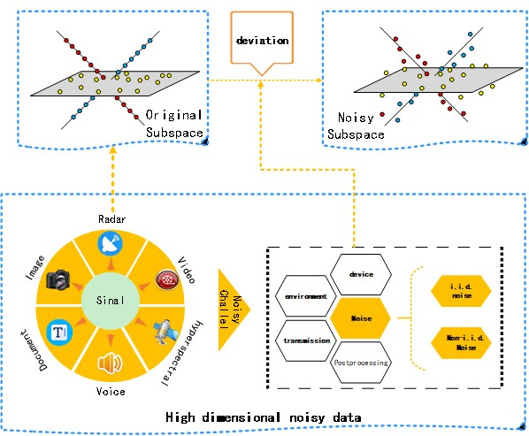
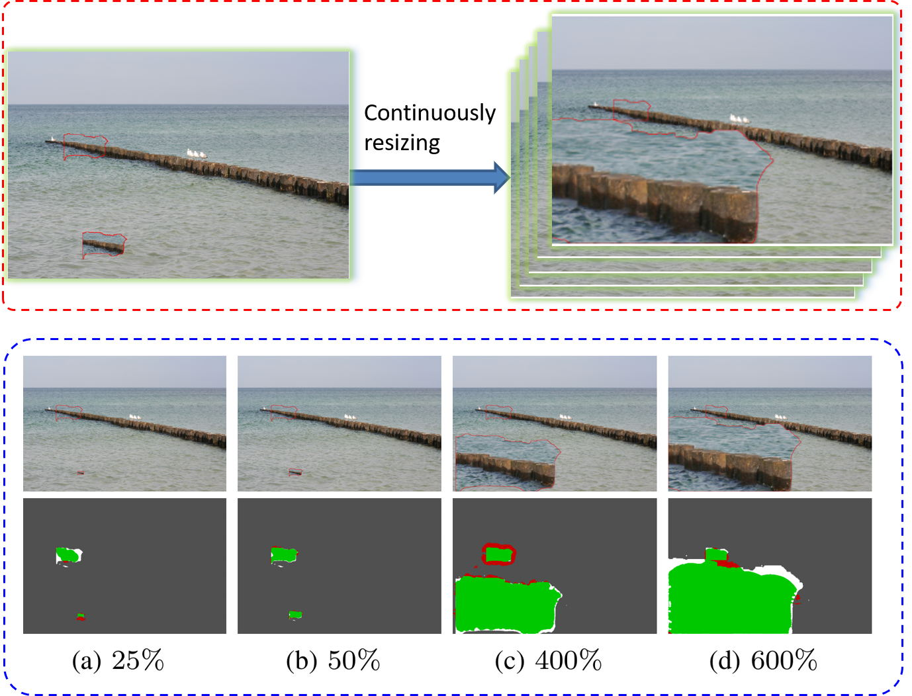
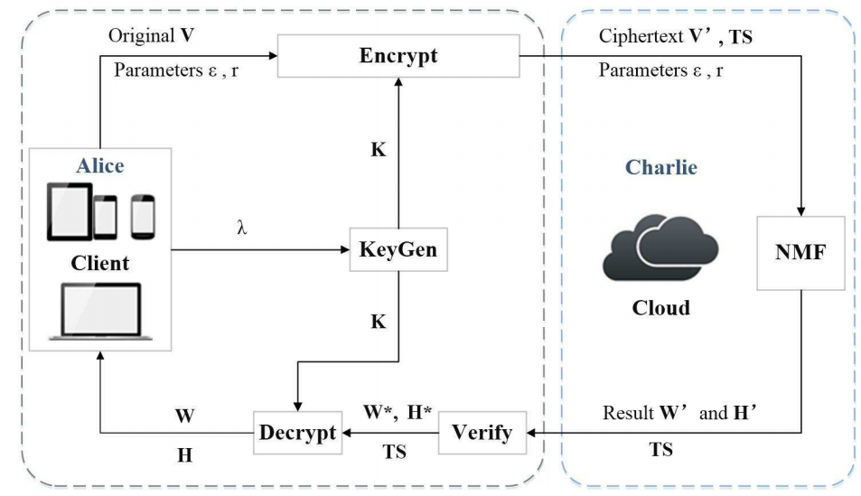
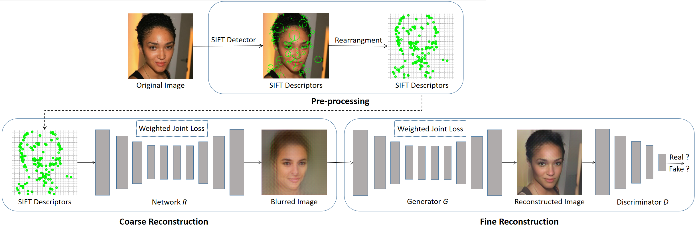
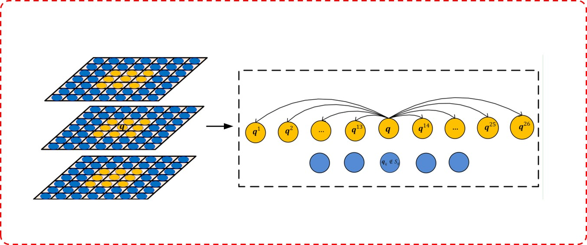
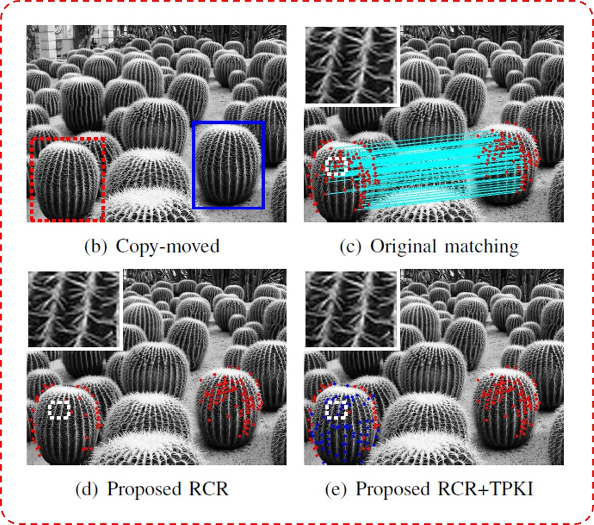
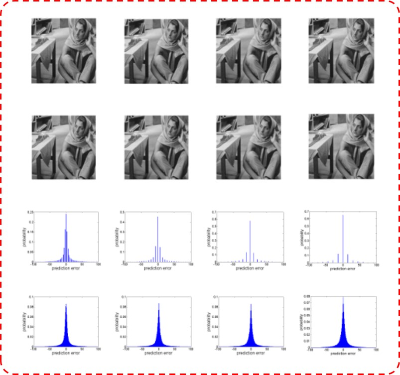

Yuanman Li 李元满Assistant Professor
|
Google Scholar: https://scholar.google.com/citations?user=GQUDu68AAAAJ&hl=zh-CN Chinese Homepage: http://cie.szu.edu.cn/szucie/index.php/archives/6027.html |
|  | Robust Subspace Clustering with Independent and Piecewise Identically Distributed Noise Modeling
Yuanman Li, Jiantao Zhou, Xianwei Zheng, Jinyu Tian, Yuan yan Tang. IEEE Conference on Computer Vision and Pattern Recognition (CVPR), 2019. ( Oral, AR 5.6% ) [paper][Bibtex] [code] |
|  | Fast and Effective Image Copy-Move Forgery Detection via Hierarchical Feature Point Matching
Yuanman Li, Jiantao Zhou. IEEE Transactions on Information Forensics and Security (T-IFS), 2019. |
|  | Secure and Verifiable Outsourcing of Large-scale Nonnegative Matrix Factorization (NMF),
Jia Duan, Jiantao Zhou, Yuanman Li. IEEE Transaction on Services Computing (T-SC), 2019. |
|  | Image Reconstruction from Local Descriptors Using Conditional Adversarial Networks
Haiwei Hu, Jiantao Zhou, Yuanman Li. APSIPA Annual Summit and Conference (ASC), 2019. ( Oral) |
|  | SIFT Keypoint Removal via Directed Graph Construction for Color Images Yuanman Li, Jiantao Zhou, An Cheng. IEEE Transactions on Information Forensics and Security (T-IFS), 2017. [paper][Bibtex] [code] |
|  | SIFT Keypoint Removal and Injection via Convex Relaxation Yuanman Li, Jiantao Zhou, An Cheng, Xianming Liu, Yuan Yan Tang. IEEE Transactions on Information Forensics and Security (T-IFS), 2016. |
|  | Anti-Forensics of Lossy Predictive Image Compression Yuanman Li, Jiantao Zhou. IEEE Signal Processing Letters (SPL), 2015. [paper][Supplement][Bibtex][code] |